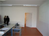
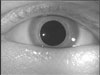
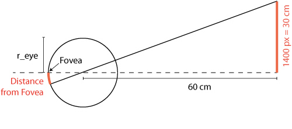
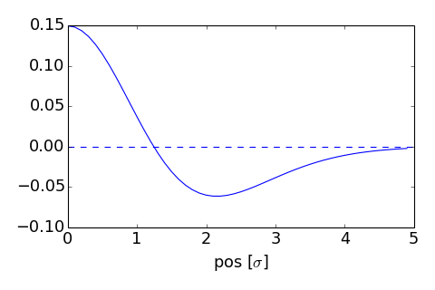

Background
The idea of a "visual prosthesis" is not as far fetched as it might seem at first, and a large number of research groups are working on different approaches. A recent overview is this Progress in Retinal and Eye Reserach (2016) article.. Some very recent developments may allow retinal prostheses without cable, thereby significantly increasing the chance of a successful longtime implants.
Exercise: Simulation of a Retinal/Visual Implant
Data
All the Files for this exercise are bundled in "Ex_Visual.zip"
In addition, you can use the following files:
- Typical standard test images that are often used in image processing (e.g. lena, mandrill, etc.) can also be found at the Waterloo BragZone.
- You can also use one of the following:
|  |  | |
| TheDoor.jpg (146 kB) | eye.bmp (434.kB) |
lena.tif (769 kB) This image also has an interesting story in the world of image processing. |
{kind=link}
{kind=link}
{kind=link}
- Hans van Hateren hosts a website with natural images that people often use for training receptive fields, etc.
General Requirements
For this exercise you should design a "visual prosthesis": Write a Pyhon/Matlab program which
- Takes a given input image, or - if none is provided - lets you interactively select an input image
- In this image, lets you interactively select a fixation point ("ginput")
- Calculates the activity in the retinal ganglion cells, and shows the corresponding activity, and
- Calculates and shows the activity in the primary visual cortex, and
- Save this image to an out-file.
Retinal Ganglion Cells
- Assume that the display has a side length of 30 cm, a resolution (for those 30 cm) of 1400 pixels, and is viewed at a distance of 60 centimeter (see Figure below). The radius of the eye is typically 1.25 cm. This lets you convert pixel location to retinal location.

- We know that the retinal ganglion cells respond best to a "center-surround" stimulus: they show the maximum response when the center is bright and the surrounding dark ("center-on cells"), or vice versa ("center-off cells"). This behavior can be simulated with a "Difference of Gaussians" (DOG)-filter. For this exercise, simulate only "center-on" responses. The figure below shows an section through the receptive field of a typical ganglion cell (DOG with ratio: sigma2 / sigma1 = 1.6). As you see, the sidelength of the receptive field should be about 2*5*sigma1 = 10*sigma1.

- The receptive field size increases approximately linearly with distance from the fovea. For magnocellular cells, we have approximately RFS [arcmin] = 10 * eccentricity [mm].
The parameters are also described in the wikibook on Sensory Systems, and in the article "Computational models of early human vision" (pdf, 2.2MB). Take these parameter values as approximations: I have found different values in the literature, regarding "size of receptive field", "size of dendritic field", "center size", "visual acuity", etc, and their exact relation to each other.
Cells in V1
- Activity in V1 can be simulated by Gabor filters with different orientations. For this exercise, first only use Gabor filters which respond to vertical lines.
- Since I have not been able to find explicit information about any dependence of receptive field size on distance from fovea, please assume a constant receptive field size.
- Input is the original image, not the input from the ganglion cells!
- When this works, repeat this for activity of Gabor cells with a few different orientations (0 - 30 - 60 - 90 - 120 - 150 deg), to get a "combined image" in V1.
Tips
Parameters and Results
Matlab
- Intro_ImgProc shows you how to calculate the radius from a fixation point, and how to apply different filters to different zones.
- FilterTest provides a practical interactive example how visual filters can be imprlemented. Start with the parameters "size = 30", and "sigma = 5".
- Simple_GUI is a stripped-down GUI, which shows how to draw graphs, and how to manipulated / filter data from plots. Note that to get started with GUIs in Matlab, use the Matlab function "guide".
Python
- gabor_demo.py gives a nice example of how the output of different cells in V1 corresponds to different features of the image.
- Intro_ImgProc.ipynb gives an introduction to image processing with Python
- ImageFiltering.ipynb shows how to apply different filters to different zones.
Interesting Links
General comments
- Name the main file
Exercise3_Visual.[m/py]. - For submission of the exercises, please put all the
required code-files that you have written, as well as the
input- & data-files that are required by your program,
into one archive file. ("zip", "rar", or "7z".) Only submit
that one archive-file. Name the archive
Ex3_[Submitters_LastNames].[zip/rar/7z]. - Please write your programs in such a way that they run, without modifications, in the folder where they are extracted to from the archive. (In other words, please write them such that I don't have to modify them to make them run on my computer.) Provide the exact command that is required to run the program in the comment.
- Please comment your programs properly: write a program header; use intelligible variable names; provide comments on what the program is supposed to be doing; give the date, version number, and name(s) of the programmer(s).
- To submit the file, go to "Self-Grading of Ex3".